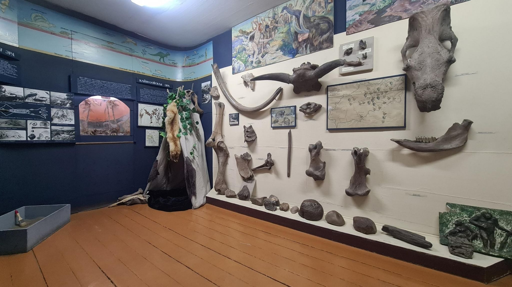
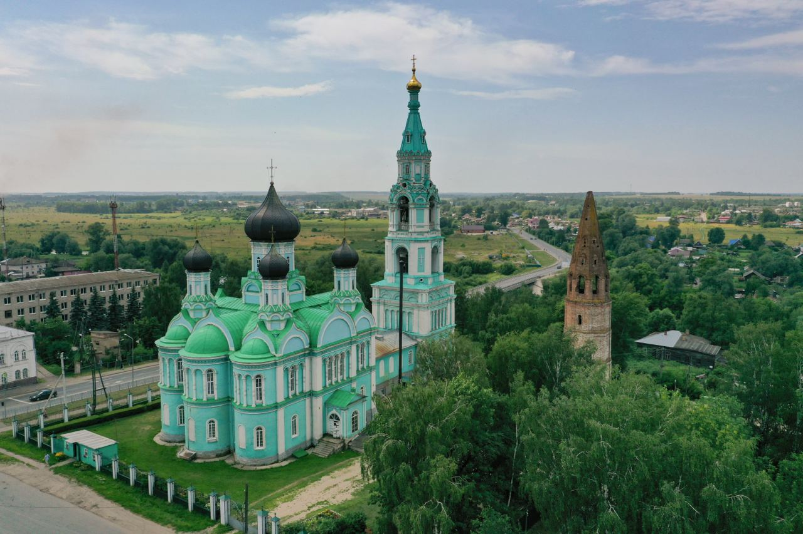
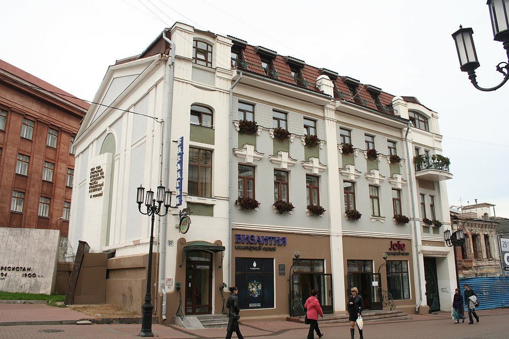
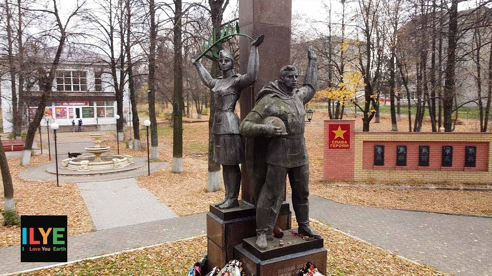
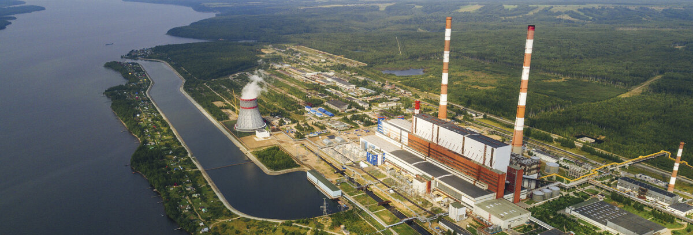
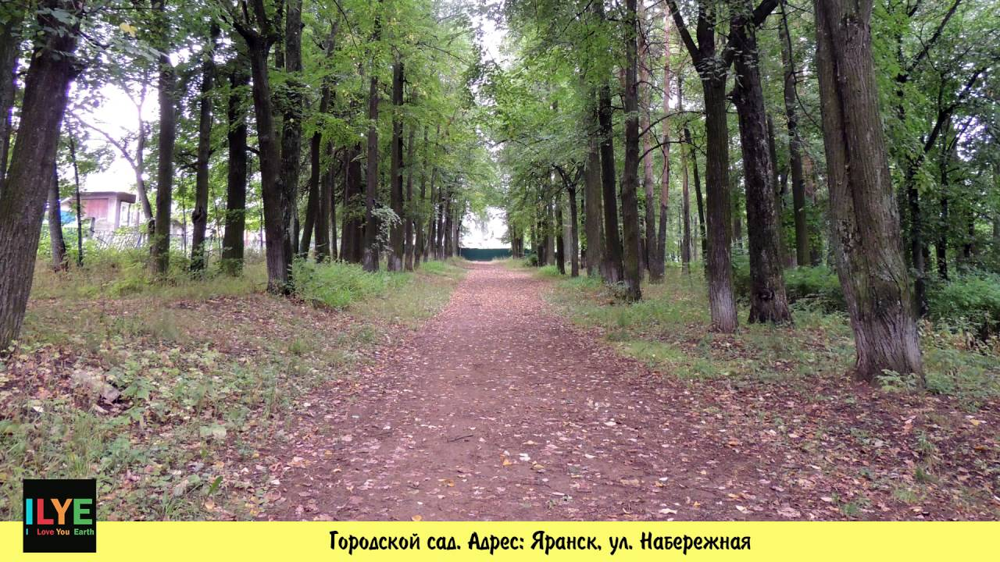
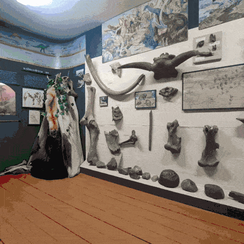

Видео о Яранске
Достопримечательности Яранска

Яранский краеведческий музей
Один из старейших музеев Кировской области с богатой коллекцией экспонатов.

Троицкий собор
Памятник архитектуры XIX века, главный православный храм Яранска.

Дом купца Колчина
Образец купеческой архитектуры конца XIX века, ныне - административное здание.

Парк Победы
Мемориальный комплекс и место отдыха горожан с аллеей ветеранов.

Яранская ГРЭС
Памятник промышленной архитектуры начала XX века.

Городской сад
Старейший парк города, основанный в 1890 году.
Яранск в движении

Виды на достопримечательности Яранска